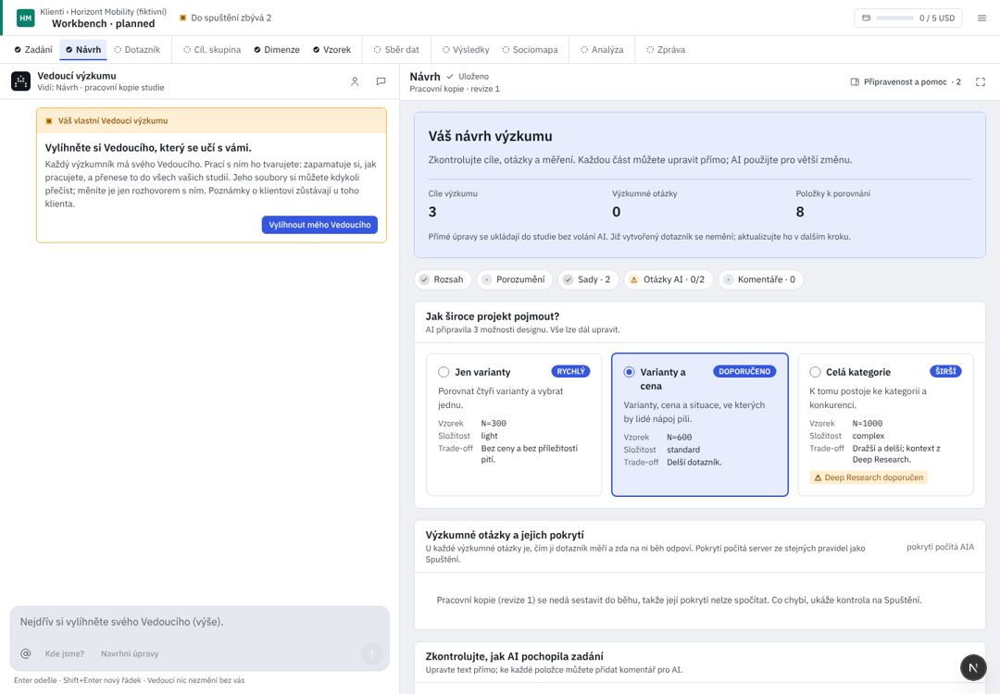

Klienti / Pivovar Zlatá Hora
Vnímání značek ležáků 2026
{{editsTitle}} · nic se nezmění, dokud je nepřijmete
{{e.where}}
{{e.word}}
{{e.before}}{{e.after}}Proč: {{e.why}}01
Rozsah
{{scopeText}}
{{scopeNote}}
{{q.id}}
03
Hypotézy
H1
Zlatá Hora 12° je vnímána jako tradiční a poctivá, s nejvyšším celkovým hodnocením v Čechách.
ověří S1 (celkové hodnocení 7 značek) · ověřitelná
H2
{{h2}}
zatím nic neověří: dotazník se na modernost neptáVýrok „působí moderně“ čeká v Dotazníku →
Objekty · 7
{{o}}
Škála
05
Co potřebuji ještě vědět
ukládá se hned06
Komentáře
{{comCount}}{{c.t}}{{c.on}}
Komentář nic nemění. Změnu udělá Vedoucí až na vaši žádost a ukáže ji v liště nahoře.
UX kritika · Návrh
Návrh je místo, kde se výzkum rozhoduje: otázky, hypotézy a sady. Dnes drží sady odděleně od Dotazníku, hlásí změny, které nenastaly, a ztrácí odpovědi. Kód d5d36b25; R/ = apps/web/src/components/rehome/research/.
Dnes v AIA (workbench, 1440 px)

{{c.l}}{{c.t}}
- {{x.t}}{{x.a}}